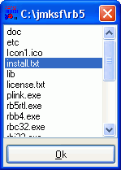

Operating on the file system
To manage with files, RapidBATCH provides the instructions NEWFILE, DELFILE, COPYFILE, RENAMEFILE as well as the functions FILEEXISTS and FINDFILES.
NEWFILE has the only purpose to create a new, empty file in the file system, DELFILE deletes a file. The use of both instructions is equivalent.
rem create a file
newfile 'empty.txt'
if [errorcode] = '0' echo 'The file empty.txt has been created!'
rem delete the file again
delfile 'empty.txt'
if [errorcode] = '0' echo 'The file empty.txt has been deleted again!'
Same procedure here: We're able to verify the operation success by verifying [errorcode] to the value of '0', meaning "successful".
To copy a file, RapidBATCH provides the COPYFILE-instruction. It creates a 1:1 copy of any file. The RENAMEFILE-instruction, expecting the same parameters as COPYFILE, renames or even moves a file into another directory or drive.
An example:
rem copy C:\jmksf\rb5\readme.txt to C:\test.txt...
copyfile 'C:\jmksf\rb5\readme.txt', 'C:\test.txt'
rem open C:\TEST.TXT...
open 'C:\test.txt'
rem delete C:\TEST.TXT again...
delfile 'C:\test.txt'
rem rename C:\jmksf\rb5\readme.txt to C:\test.txt ...
renamefile 'C:\jmksf\rb5\readme.txt', 'C:\test.txt'
rem open C:\TEST.TXT again...
open 'C:\test.txt'
rem rename C:\test.txt back to C:\jmksf\rb5\readme.txt again...
renamefile 'C:\test.txt', 'C:\jmksf\rb5\readme.txt'
To check if a file is already existing or not, the FILEEXISTS-function can be used. It returns the value '0' to the return variable in case if the specified file does exist, or else the value '-1'.
fileexists [fx] = 'C:\AnyFile.txt'
if [fx] = '-1'
echo 'File is not existing.'
else
echo 'The file exists!'
endif
One of the most powerful and effective functions RapidBATCH provides is the FINDFILES-function. FINDFILES has the only purpose to build and return a list of files by searching a whole directory (including its sub-directories until a desired depth) by using the wildcard-characters * and ?. In the result string the function returns, each file name is seperated by the RapidBATCH default seperation character (that is globally defined in the [std_sep]-variable and by default the pipe-character, "|"). Such lists are already known from the RapidBATCH build-in dialogs LISTBOX and TRAYMENU, and can be processed using the GETTOK-tokenizer function.
The following script generates such a file list and displays the files it found in a LISTBOX-dialog, so they can be viewed.
rem generate file list of the current directory, listing ALL files (wildcard * only!)
findfiles [filelist] = '*', '1'
rem view the files in a LISTBOX-dialog
listbox [file] = [current], [filelist]
if [file] ! '' echo 'You selected the file: ' # [file]
end

Displaying the list of files generated by FINDFILES within the LISTBOX-dialog.
FINDFILES expects as the first parameter a so called path- and file-filter, that means only files that fit to this filter are appended to the returned file list. For the file filter, FINDFILES supports wildcards. Wildcards are the characters * and ?, where * represents any string of characters and ? any single character. For example, when specifying the filter '*.txt', all files with an ending '.txt' are listed. The corresponding string in front of the '.txt' can be any string, so that "hello.txt" is listed same as "thisisanyname.txt".
The second, numerical parameter is the directory depth FINDFILES should list. You can list the files that are only in one directory by specifying the depth-value '1', all files in one directory and all its sub-directories by specifying the depth '2' or even all of a folder's sub-directories up to a maximum depth of 255 (which is nearly impossible!) by specifying the value '0'.
Return value of FINDFILES is, as already mentioned, a list of relative file names where each file is seperated by the separation character defined in the [std_sep]-variable. Because of that, we can directly pass this list to LISTBOX where the files are displayed without any string modification.
To demonstrate the usage of different file filters, wildcards and directory depths, take a look at the following calls of FINDFILES.
rem list all files in the current folder, including name of sub-folders:
findfiles [file_list] = '*', '1'
rem (the "*" filter lists every file (or even sub-folder) that exists within the folder)
rem list all txt-files within the current directory and one sub-directory level:
findfiles [file_list] = '*.txt', '2'
rem (the filter "*.txt" finds all files having the .TXT extension. That means that
rem "hello.txt", "x.txt" as well as "txt.txt" is listed (if they would really exist!))
rem list all files beginning with "hello" and having the ".DOC"-extension:
findfiles [file_list] = 'hello*.doc', '1'
rem list all files beginning with an "h", followed by any character, and a following
rem "llo". Behind the "llo", any other name is allows. The files have an extension that
rem is seperated by a dot:
findfiles [file_list] = 'h?llo*.*', '1'
rem (in this case, the files "hallo92.sav", "hello.bak", "hullokkn.exe"
rem and "hhlloHELLO_funnyFileName." would be listed, if they would exist!)
rem list all files having an extension in the whole directory, including all
rem sub-folders that exist (up to 255 sub-folder levels):
findfiles [file_list] = '*.*', '0'
rem list all .RB-files that only have one character in their name:
findfiles [file_list] = '?.rb', '1'
rem (the filter "?.rb" lists all files that begin with one single character in the
rem front (the ?-wildcard means any single character), that means only files like
rem "a.rb", "x.rb" or "1.rb" are listed, but not "ab.rb" or something like that)
And finally at the end of this chapter, a procedure called "copyfiles", copying files from a source-directory into a target-directory. This procedure is also a demonstration how to copy (or even move) files using wildcards.
proc copyfiles: [source], [target], [filter]
rem declare locale variables
dec [i], [file], [file_list]
rem reading the file list
findfiles [file_list] = [source] # '\' # [filter], '1'
if [file_list] = '' ret
rem creating the target-directory for secureness
rem (of course it won't be overwritten if it exists!)
mkdir [target]
rem go through the file list and copy each file
[i] = '0'
repeat
[i] + '1'
gettok [file] = [file_list], '|', [i]
rem if [file] is not empty, copy it!
if [file] ! ''
copyfile [source] # '\' # [file], [target] # '\' # [file]
endif
until [file] = ''
endproc
rem An example call of the procedure, copying all files from
rem "C:\jmksf\rb5" into "C:\test":
copyfiles 'C:\jmksf\rb5', 'C:\test', '*.*'
end
Copyright © 2000-2006 by J.M.K S.F. Software Technologies, Jan Max Meyer
All rights reserved.